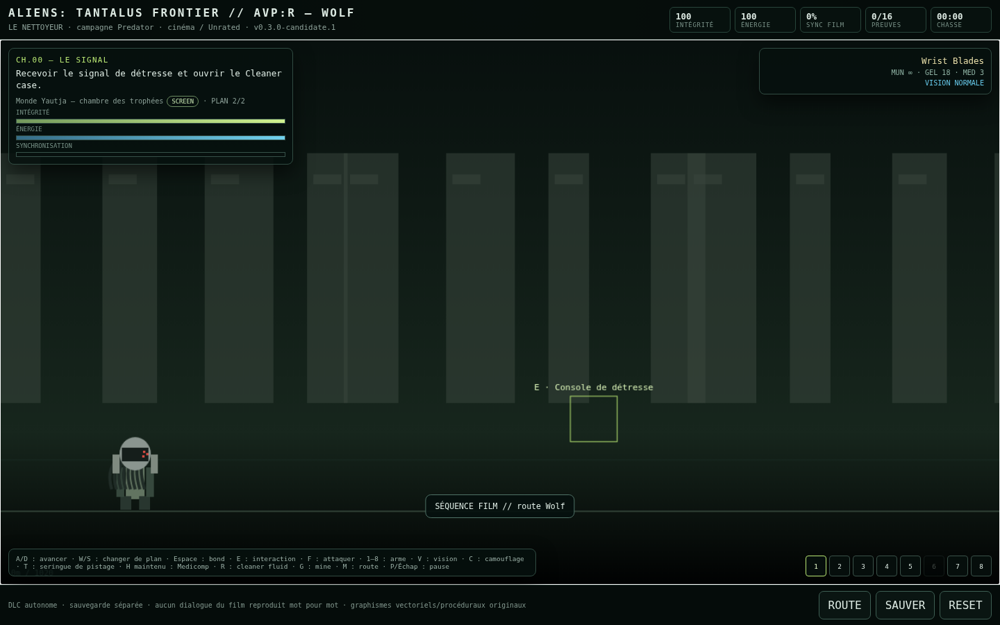
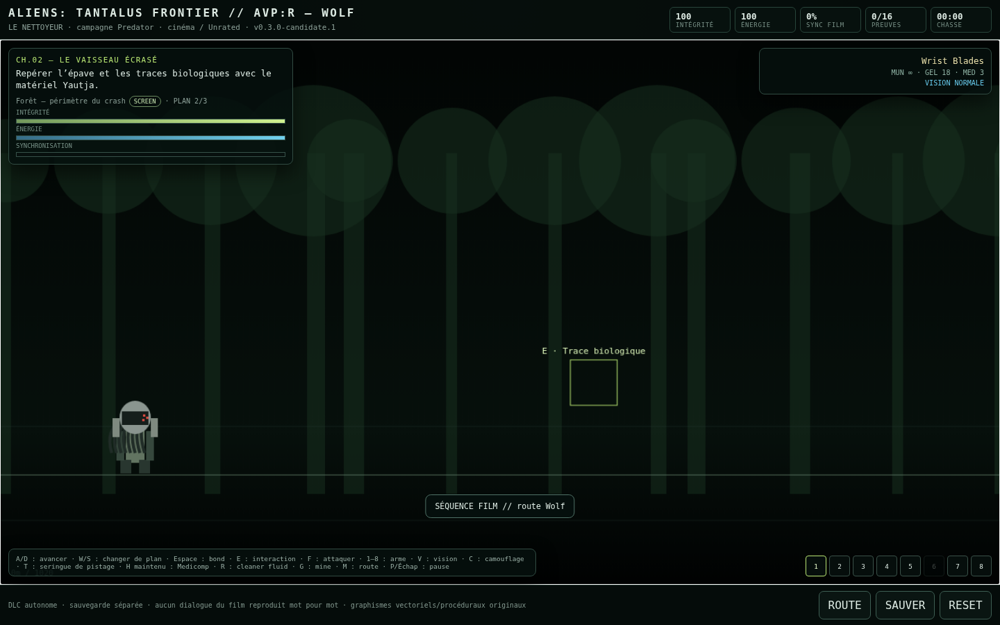
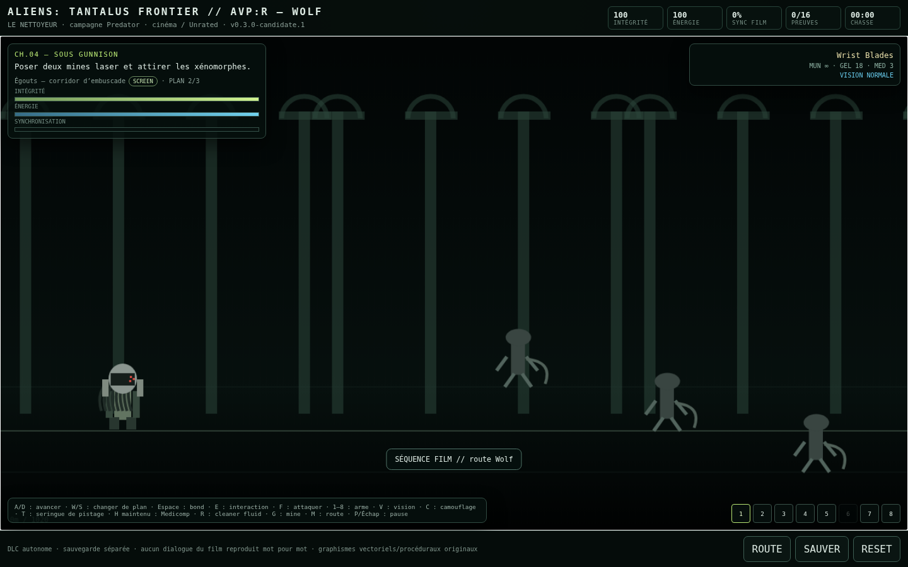
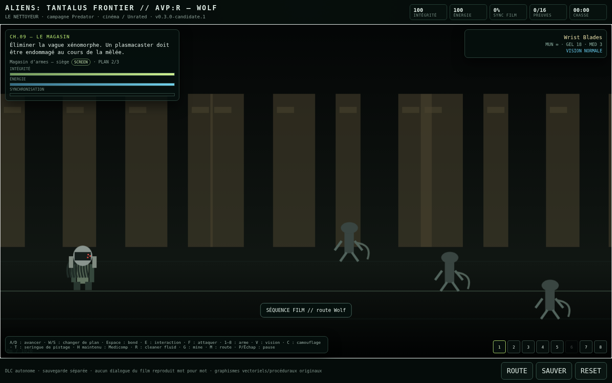
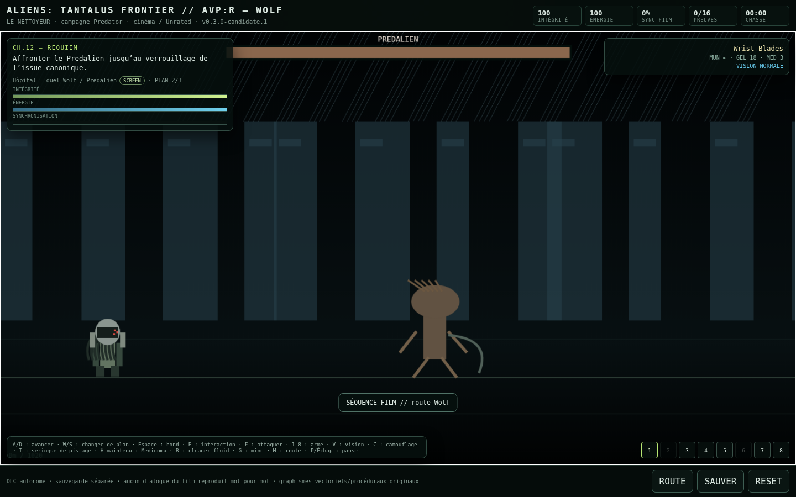

AVP:R — WOLF / v0.3
Captures réelles du standalone exécuté dans Chromium headless via injection directe du document autonome. Elles couvrent le monde Yautja, le crash, les égouts, la centrale, la piscine, le magasin, la maternité et le duel final.







